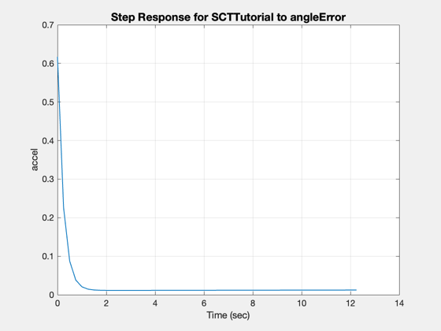
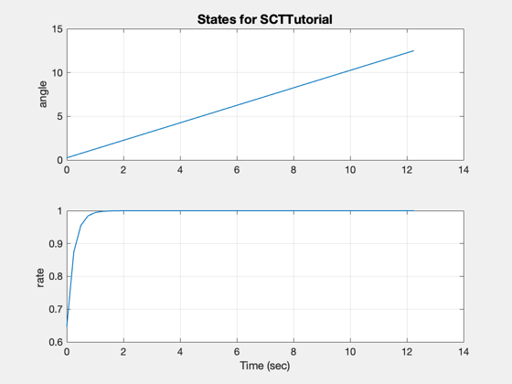
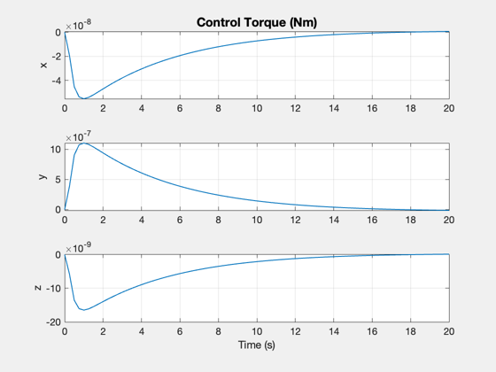
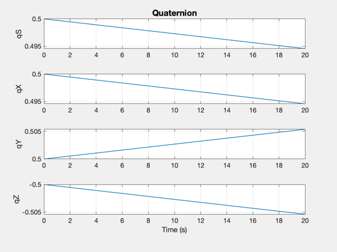
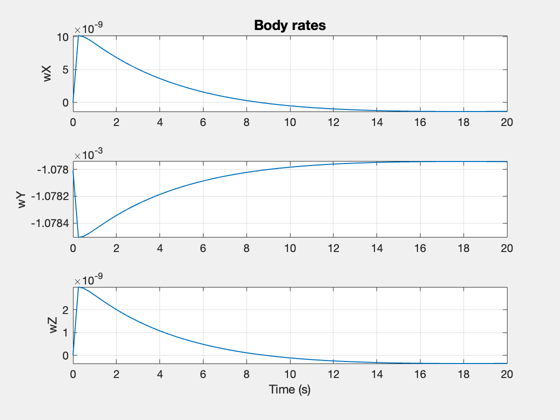
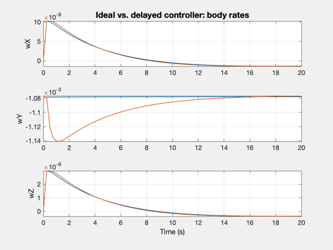
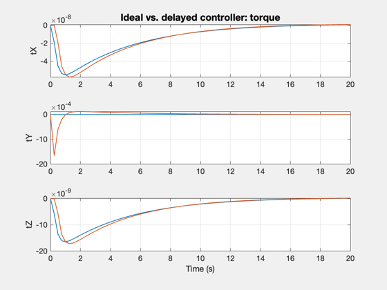

Implements a spacecraft control tutorial.
------------------------------------------------------------------------
See also @statespace/statespace.m, PIDMIMO, Step, QError, QLVLH, QMult,
QPose, Plot2D, RK4, Period, RVFromKepler, Accel
------------------------------------------------------------------------
echo on
inr = 1;
zeta = 0.7071;
omega = 0.1;
tauInt = 100;
omegaR = 4;
tSamp = 0.25;
pause
%---------------------------------------------------------------------
% Welcome to the SCTTutorial!
% We are going to design and simulate a station-keeping
% attitude control system.
%---------------------------------------------------------------------
% First, we prepare the inputs to the PIDMIMO function.
% PIDMIMO performs automatic pole placement.
%
inr = 1; % unit inertia - controller outputs an acceleration
zeta = 0.7071; % damping ratio (critically damped)
omega = 0.1; % natural frequency (rad/sec)
tauInt = 100; % integrator time constant (sec)
omegaR = 4; % derivative roll-off
tSamp = 0.25; % sampling time (sec)
pause
type = 'delta';
[a, b, c, d, k] = PIDMIMO( inr, zeta, omega, tauInt, omegaR, tSamp, type)
pause
%%
%---------------------------------------------------------------------
% Now, we calculate state-space control system:
type = 'delta';
[a, b, c, d, k] = PIDMIMO( inr, zeta, omega, tauInt, omegaR, tSamp, type)
a =
0 0
0 -0.64579
b =
0.25
0.64579
c =
9.6353e-05 -0.6061
d =
0.61709
k =
struct with fields:
kP: 0.010999
kR: 0.146
kI: 9.6353e-05
pause
g = statespace( a, b, c, d, 'SCTTutorial',{'angle','rate'}, {'angleError'},{'accel'},type,tSamp );
nSteps = 50;
Step(g, 1, tSamp, nSteps, 'step')
pause
%%
%---------------------------------------------------------------------
% Let's create a state space object to get the step response:
g = statespace( a, b, c, d, 'SCTTutorial',{'angle','rate'}, {'angleError'},{'accel'},type,tSamp );
nSteps = 50;
Step(g, 1, tSamp, nSteps, 'step')
pause
 
inertia = diag([24.5 10 25])
invInertia = inv(inertia);
pause
%%
%---------------------------------------------------------------------
% Before we run the simulation, we need to define the spacecraft properties.
inertia = diag([24.5 10 25])
inertia =
24.5 0 0
0 10 0
0 0 25
invInertia = inv(inertia);
pause
echo off
w0 = 2*pi/Period(7000);
x = [0.5;0.5;0.5;-0.5;0;-w0;0];
t = 0:tSamp:20;
[r,v] = RVFromKepler([7000;0;0;0;0;0],t);
qLVLH = QLVLH(r,v);
xRoll = [0;0];
xPitch = [0;0];
xYaw = [0;0];
tExt = [0;0;0];
xPlot = zeros(7,length(t));
tPlot = zeros(3,length(t));
for k = 1:length(t)
xPlot(:,k) = x;
if k == 1
tDist = [1e-6; -2e-5; 3e-7];
else
tDist = [0;0;0];
accel = zeros(3,1);
qECIToBody = x(1:4);
qECIToLVLH = qLVLH(:,k);
qBodyToLVLH = QPose( QMult( QPose(qECIToBody),qECIToLVLH ) );
if( qBodyToLVLH(1) < 0 )
qBodyToLVLH = -qBodyToLVLH;
end
angleError = -2*qBodyToLVLH(2:4);
accel(1) = c*xRoll + d*angleError(1);
xRoll = xRoll + a*xRoll + b*angleError(1);
accel(2) = c*xPitch + d*angleError(2);
xPitch = xPitch + a*xPitch + b*angleError(2);
accel(3) = c*xYaw + d*angleError(3);
xYaw = xYaw + a*xYaw + b*angleError(3);
tExt = -inertia*accel;
end
if( k == 1), echo on, end
x = RK4( @FRB, x, tSamp, t(k), inertia, invInertia, tExt+tDist );
echo off
tPlot(:,k) = tExt;
end
Plot2D(t,xPlot(1:4,:),'Time (s)',['qS';'qX';'qY';'qZ'],'Quaternion');
Plot2D(t,xPlot(5:7,:),'Time (s)',['wX';'wY';'wZ'],'Body rates');
Plot2D(t,tPlot,'Time (s)',['x';'y';'z'],'Control Torque (Nm)');
echo on
pause
%%
%---------------------------------------------------------------------
% Now we are ready to simulate our controller. We will use small
% torques applied in the first step of the simulation to test
% the control system's response.
%
echo off
% This is the numerical integration of the dynamics:
x = RK4( @FRB, x, tSamp, t(k), inertia, invInertia, tExt+tDist );
echo off
pause
  
echo off
x = [0.5;0.5;0.5;-0.5;0;-w0;0];
xRoll = [0;0];
xPitch = [0;0];
xYaw = [0;0];
tExt = [0;0;0];
xDPlot = zeros(7,length(t));
tDPlot = zeros(3,length(t));
xOld = x;
for k = 1:length(t)
xDPlot(:,k) = x;
if( k == 1 )
tDist = [1e-6; -2e-5; 3e-7];
else
tDist = [0;0;0];
accel = zeros(3,1);
qError = QPose( QMult( QPose(xOld(1:4)),qLVLH(:,k) ) );
if( qError(1) < 0 )
qError = -qError;
end
angleError = -2*qError(2:4);
accel(1) = c*xRoll + d*angleError(1);
xRoll = xRoll + a*xRoll + b*angleError(1);
accel(2) = c*xPitch + d*angleError(2);
xPitch = xPitch + a*xPitch + b*angleError(2);
accel(3) = c*xYaw + d*angleError(3);
xYaw = xYaw + a*xYaw + b*angleError(3);
tExt = -inertia*accel;
end
xOld = x;
x = RK4( @FRB, x, tSamp, t(k), inertia, invInertia, tExt+tDist );
tDPlot(:,k) = tExt;
end
Plot2D(t,[xPlot(5:7,:); xDPlot(5:7,:)],'Time (s)',['wX';'wY';'wZ'],'Ideal vs. delayed controller: body rates','lin',['[1 4]';'[2 5]';'[3 6]']);
Plot2D(t,[tPlot; tDPlot],'Time (s)',['tX';'tY';'tZ'],'Ideal vs. delayed controller: torque','lin',['[1 4]';'[2 5]';'[3 6]']);
%%
%---------------------------------------------------------------------
% Now let's see how our controller performs with a lag in the system.
% We'll create a small stack so that our state update to the controller
% is one sampling time interval behind.
echo off
 